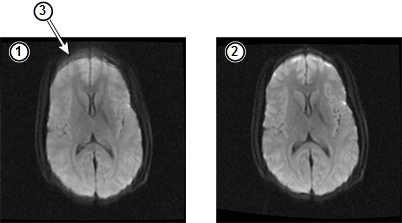

- 00000018WIA30D97030GYZ
- id_123749071.2
- Dec 8, 2022 1:34:12 PM
High Order Eddy Current (HOEC) theory
High Order Eddy Current (HOEC) correction is used in diffusion-weighted echo planar imaging to correct for time-dependent magnetic field errors induced by diffusion gradients. It is a process that removes the effects of high order eddy currents during data acquisition and image reconstruction
This feature is called “Real Time Field Adjustment” in the operator interface.
Problems with eddy currents
Faraday’s Law tells us that any time there is a change in a magnetic field around an electrical conductor, there is a resulting change in the electric current through that conductor. The magnet’s gradient fringe field causes changes in the field around the magnet over time, producing detectable changes in the electric current. Those changes in the current produce undesired effects on the images produced by the system. Although Grafidy does a good job of eliminating the effects of changes in the magnetic field for the linear and B0 terms, HOEC is designed to minimize the effects of second- and third-order eddy currents.
The following illustration shows the effects of these high order eddy currents and the results of HOEC correction. (The images have been adjusted to make the defect more apparent.)

| 1 | Uncorrected SSE image |
| 2 | HOEC corrected SSE image |
| 3 | Blurring related to mis-registration due to high order eddy currents |
About HOEC calibration
During the HOEC calibration procedure, the system acquires information about the high order eddy currents in the system and produces compensation information for the effects of those currents. When an image is acquired using HOEC compensation (called “Real Time Field Adjustment” in the operator interface), the system applies that compensation information to data acquisition and image reconstruction.
See High Order Eddy Current (HOEC) Calibration for the calibration procedure.
When to calibrate for HOEC
Run the HOEC calibration after Grafidy calibration; for example, after magnet ramping or shimming.
PSDs where HOEC provides improvement
HOEC improves image quality on these PSDs:
- Diffusion-specific features:
- All
- 3 in 1
- SLICE
- SI
- RL
- AP
- Tetra
- TENSOR
- Multi b
- Smart Nex
- Skip T2
- Optimize TE
- DW EPI/DT EPI compatible imaging options and user CVs
- DW EPI/DT EPI compatible fat suppression techniques:
- Fat Sat
- SPECIAL
- IR Prep
- Refless EPI
- Focus